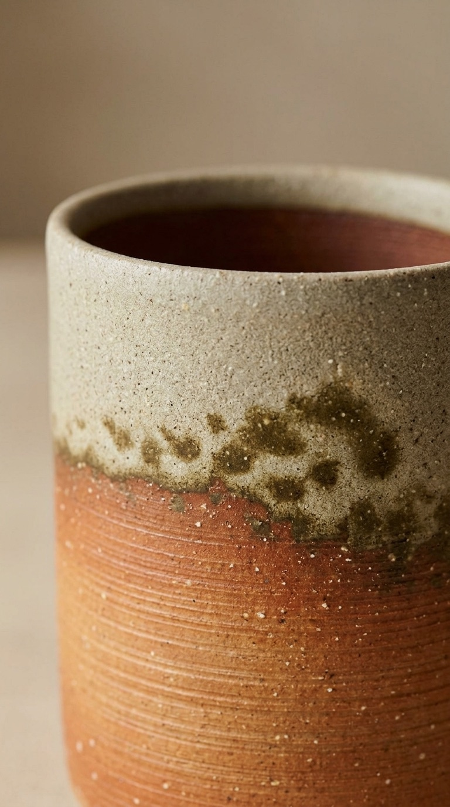
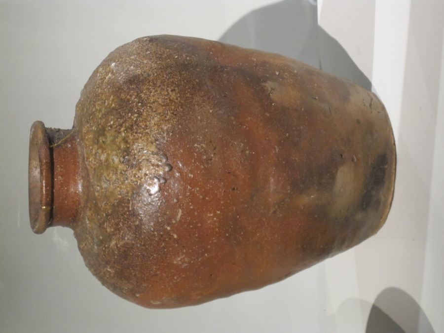

Look at a piece like this and it's tempting to assume someone painted the color block by hand. Nobody did. The pale top and the rust-red bottom are made by two completely different physical processes -- and both happen inside the kiln, with zero brushwork.
During a traditional multi-day wood firing, the fire and the wood ash do two separate jobs on the clay:
Airborne wood ash drifts through the kiln and settles on the clay. Where it lands and melts against the feldspar already in the clay body, it fuses into a natural glaze -- pale, gritty, often mottled with darker flecks where the ash was thickest.
Where the clay is licked directly by flame instead of coated in ash, the iron minerals inside the clay itself oxidize under the heat -- turning that section a deep orange-red. This is a color change in the clay, not a coating on top of it.
Potters call these effects haikaburi (灰被り, "ash-covered") and hi-iro (緋色, "fire color"). Which parts of a piece get which effect depends on exactly how it sat in the kiln relative to the fire and the ash fall -- which is why, traditionally, no two pieces ever come out looking quite the same.

This piece is from Shigaraki, a pottery region in Shiga Prefecture near Lake Biwa, and one of Japan's Six Ancient Kilns -- kiln sites with an unbroken production history running back over a thousand years. Shigaraki clay is naturally coarse and high in feldspar and quartz grit, which is exactly what lets the ash fuse into that speckled natural glaze instead of just sitting on top as dust. Traditionally, pieces were fired for days at a stretch in an anagama ("cave kiln") -- and where a pot sat in that kiln, not the potter's brush, decided its final coloring.
To be upfront about this pair: at $37 for a matched set of two, and sold in six different color/pattern options from the same generic listing, this is not an individual one-of-a-kind anagama firing from a named kiln -- a genuine piece like that would cost dramatically more and be sold as a single, unrepeatable item, not as a matched pair. What this is: a modern stoneware reproduction that carries the same ash-glaze-and-fire-color aesthetic into an everyday cup, made for actual daily tea drinking rather than display.
j-pure hitomi Japanese Shigaraki Ware ceramic yunomi teacups, Brown Kinari colorway, 9.8 fl oz each, set of 2. Made in Japan.
See current price on Amazon →As an Amazon Associate, I earn from qualifying purchases.
This page contains an affiliate link — if you buy through it, it costs you nothing extra and helps support this site. The 16th-century Shigaraki jar shown above is a museum-held piece shown for historical context; it is not the product for sale on this page.